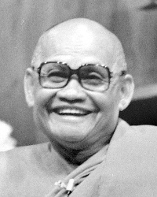

2. Recollection: Ajahn Chah was a memorable person; his influence has spread around the world. Recounted by Ajahn Pasanno. [Ajahn Chah lineage ] [Ajahn Chah] // [Faith] [Ajahn Sumedho]
3. Recollection: My introduction to Ajahn Chah. Recounted by Ajahn Pasanno. [Ajahn Pasanno] [Ajahn Chah] // [Temporary ordination] [Travel] [Wat Phleng Vipassanā] [Forest versus city monks]
4. Recollection: Ajahn Chah’s community in 1975. Recounted by Ajahn Pasanno. [Ajahn Chah lineage] [Ajahn Chah] // [Wat Pah Pong ] [Western Ajahn Chah lineage] [Thai Ajahn Chah monasteries] [Isan] [Personal presence]
5. Recollection: Ajahn Chah taught by example, but put the focus on the monastic training and community. Recounted by Ajahn Pasanno. [Monastic life] [Saṅgha] [Ajahn Chah] // [Humility]
Quote: “He was unique in his ability to draw people in without it having to be about him.” [Ajahn Chah] [Personal presence ] [Personality]
6. Recollection: Why I stayed with Ajahn Chah. Recounted by Ajahn Pasanno. [Ajahn Pasanno] [Determination] [Ajahn Chah] // [Family] [Sequence of training] [Equanimity] [Personal presence]
7. Recollection: He was always willing to push us beyond what we thought we could do. Recounted by Ajahn Pasanno. [Fierce/direct teaching] [Ajahn Chah] // [Intuition]
Quote: “I hope you’re not afraid of suffering. … If you’re afraid of suffering, you’re not going to grow in wisdom here.” — Ajahn Chah to Jack Kornfield. [Ajahn Chah] [Jack Kornfield] [Fear] [Suffering] [Discernment]
Quote: “If you want to stay here, you have to stay at least five years.” — Ajahn Chah to Ajahn Pasanno. [Ajahn Chah] [Ajahn Pasanno] [Sequence of training] [Determination]
Story: Ajahn Chah asks the young Ajahn Pasanno to become abbot of Wat Pah Nanachat. [Ajahn Chah] [Wat Pah Nanachat] [Abbot] [Sickness]
9. Recollection: Ajahn Pasanno’s first lunar observance night at Wat Pah Pong. Recounted by Ajahn Pasanno. [Ajahn Pasanno] [Wat Pah Pong] [Lunar observance days] [Ajahn Chah] // [Monastic life] [Pace of life] [Patience]
Quote: “You learn as you go. You expand your ability to go beyond the limitations you set for yourself.” [Learning]
Quote: “The more you resist and complain in your mind, the more you suffer.” [Aversion] [Suffering] [Habits]
10. Reflection by Ajahn Pasanno: Ajahn Chah used the Vinaya rules as a basis to train in mindfulness and clear comprehension. [Vinaya] [Mindfulness] [Clear comprehension] [Ajahn Chah] // [Volition] [Perception of a samaṇa] [Protocols ] [Sense restraint] [Beauty] [Faith]
Story: Ajahn Chah demonstrates how to put down a yahm (monk’s shoulder bag). [Ajahn Chah] [Requisites] [Ajahn Sumedho]
Vinaya: Mahāvagga 1.23: Sāriputta gains faith from Venerable Assiji’s demeanor. [Great disciples]
13. Recollection: Ajahn Chah enjoyed teasing people and playing with words. Recounted by Ajahn Pasanno. [Humor] [Ajahn Chah] // [Ajahn Gavesako] [Ajahn Amaro] [Ajahn Pasanno] [Compassion]
Stories: The Squirrel Story and the Donkey Story. [Kittisaro] [Ajahn Chah] [Monastic life] [Patience]
Note: Kittisaro tells these stories himself here.
14. Reflection by Ajahn Pasanno: His leadership and his teaching came from his example. [Leadership] [Teaching Dhamma] [Ajahn Chah] // [Lunar observance days] [Devotion to wakefulness]
Recollection: Ajahn Chah sits until midnight despite having malaria. [Ajahn Chah] [Sickness] [Posture/Sitting] [Sitter's practice]
16. “Can you tell us more about Ajahn Chah’s background?” Answered by Ajahn Pasanno. [Ajahn Chah] // [Wat Pah Pong] [Geography/Thailand] [Education] [Novices] [Ordination] [Ajahn Sao] [Forest versus city monks] [Death] [Ajahn Mun] [Thai sects]
Story: Six-year-old Chah plays at being a monk. [Ajahn Chah] [Monastic life]
17. “Can you speak about Luang Por Chah’s opinion about Thai superstitions and amulets?” Answered by Ajahn Pasanno. [Culture/Thailand] [Superstition] [Amulets] [Ajahn Chah] // [Humor] [Ghost] [Generosity]
Story: A young supporter drafted into the military asks Ajahn Chah for protection. [Ajahn Chah] [Buddha images]
7. Reflection by Ajahn Pasanno: Absorbing the truth, “Even the Sāsana will pass away,” doesn’t lead to a sense of dismay; it leads to wonder and the motivation, “How can I help others?” [Truth] [Spiritual urgency] [Compassion] [Suffering] [Impermanence] [Characteristics of existence]
Recollection: Ajahn Chah saw so clearly and was incredibly compassionate. [Ajahn Chah] [Fierce/direct teaching]
Quote: “What is the mind of an arahant like?” – “Only compassion.” — Ajahn Mahā Boowa. [Ajahn Mahā Boowa] [Ajahn Mun]
Quote: “Anicca, dukkha, and anatta are tools we rely on for transforming the heart.”
14. “Sometimes we hear that with practice, some qualities change, but other qualities don’t change very much over a long time of practice. When I read certain biographies [of Buddhist teachers], it seems like certain rough qualities can remain even though the mind is pure. How to know the difference in oneself and others?” Answered by Ajahn Pasanno. [Long-term practice] [Personality ] [Teachers] [Fierce/direct teaching] [Unskillful qualities] // [Suffering] [Unwholesome Roots] [Relinquishment] [Hindrances]
Ajahn Pasanno describes the personality of great teachers he has met. [Ajahn Mahā Boowa] [Ajahn Thate] [Ajahn Dune] [Ajahn Chah]
Reflection: The arahant disciples of the Buddha were able to free their minds, but they all had different personalities. [Arahant] [Buddha] [Great disciples ]
Sutta: SN 14.15 Caṅkama Sutta: Monks with different personalities gather around the great disciples.
Note: Ajahn Pasanno mentions the similarly-themed Cūḷagosiṅga Sutta (MN 31) by name, but describes the content of the Caṅkama Sutta.
4. Recollection: When I first went to Wat Pah Pong. Recounted by Ajahn Damrong. Translated by Ajahn Ñāṇiko. [Ajahn Damrong] [Wat Pah Pong] // [Tranquility] [Ajahn Chah] [Work]
3. Recollection: Ajahn Chah would go to a village and ask, “Are there any people here?” Recounted by Ajahn Jundee. Translated by Ajahn Ñāṇiko. [Ajahn Chah] // [Virtue] [Similes]
14. “Has Ajahn Chah ever used physical force to discipline his stubborn disciples out of kindness?” Answered by Ajahn Pasanno. [Ajahn Chah] [Fierce/direct teaching] [Compassion] [Monastic life] // [Ajahn Pasanno]
Story: Ajahn Chah kicks Ajahn Ñāṇadhammo in the chest. [Ajahn Chah] [Ajahn Ñāṇadhammo]